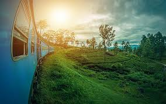
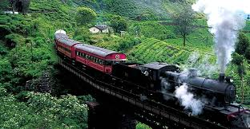
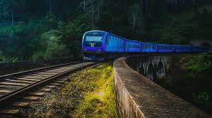
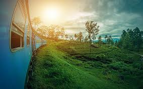
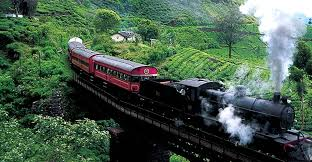
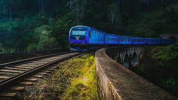

Explore Sri Lanka by Train
Discover breathtaking views, scenic landscapes, and rich culture aboard our trains.
Why Travel with Sri Lanka Railway?
Experience Sri Lanka's natural beauty.
Explore scenic routes through lush landscapes.
Affordable tickets, cheaper than bus fares.
Comfortable, clean, and safe trains.
Friendly, helpful staff onboard.
Well-marked routes for easy navigation.
Modern, well-maintained trains for a smooth ride.
Timely departures and arrivals.
Our Scenic Train Journeys
 




